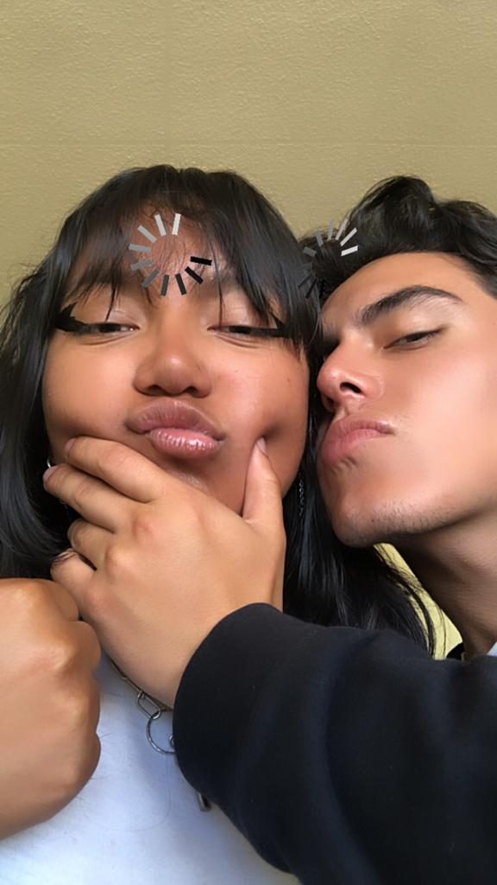

Quiero decirte que te amo... más que a cualquier cosa en este mundo... Pero a veces
me pregunto si realmente me creerías, si alguna vez creíste en la sinceridad de mis palabras. Mi corazón se
ha debatido entre la esperanza y el miedo, temiendo que mis sentimientos nunca fueran lo suficientemente
claros, que mis acciones nunca hayan hablado tan fuerte como lo hacían mis pensamientos. Quiero decirte que
te amo... y perdóname, perdóname por no haberlo demostrado tanto como me hubiera gustado. Perdóname por las
veces que mis miedos me paralizaron, por las oportunidades perdidas y los momentos en que mi amor quedó oculto
detrás de mi inseguridad. Habría querido darte el mundo, hacerte sentir amada cada segundo de cada día, pero
a veces, simplemente no sabía cómo. Quiero decirte que fuiste y serás lo más bonito que me pasó en la vida...
Pensar en ti es mi alegría, mi escape de la realidad, mi pequeño oasis personal en el desierto de la rutina
diaria. Cada recuerdo tuyo, cada pensamiento, cada sueño en el que sonreías era un rayo de sol en mis días
más grises. Quiero decirte que eres grandiosa, la mujer más grandiosa que he conocido... Tienes un brillo
propio que nadie, absolutamente nadie, puede apagar. Esa luz que emanas no solo ilumina tu camino, sino que
ha iluminado el mío de maneras que ni siquiera puedo comenzar a explicar. Tu fuerza, tu pasión, tu
determinación, todo en ti es un faro de inspiración. Quiero decirte que tienes la sonrisa más encantadora...
jaja, y me río para no llorar, porque cada vez que veo esa sonrisa, siento tanto amor y tanta pena al mismo
tiempo. Amor, porque nada me hace más feliz que verte feliz; y pena, porque sé que hay momentos en que no
puedo ser la razón detrás de esa felicidad. Quiero decirte, lo siento... la vida nos lleva por caminos que a
veces no entendemos. Las personas entran y salen de nuestra vida como hojas llevadas por el viento otoñal.
Algunas se alejan porque la vida las empuja en direcciones que no pueden resistir. Y otras... otras se despiden
sin querer realmente hacerlo, dejando atrás un silencio que pesa, que resuena en el corazón como una canción
inacabada. Quiero que sepas que pido perdón, o mejor dicho... que entiendas por qué a veces siento que no
deberías perdonarme. Sí, puede sonar confuso, jaja... Es la lucha interna de querer redención y al mismo
tiempo saber que he cometido errores que marcaron nuestros momentos. Solo quiero decirte que lo siento, lo
siento profundamente si alguna vez las sombras de mis acciones oscurecieron la luz que intentaba ofrecerte.
No fue mi intención. Cada paso en falso, cada palabra mal dicha, fueron errores de alguien que, aunque
imperfecto, te ama con una profundidad que trasciende cada fallo. Y por último, solo quiero decirte, que te
amo...